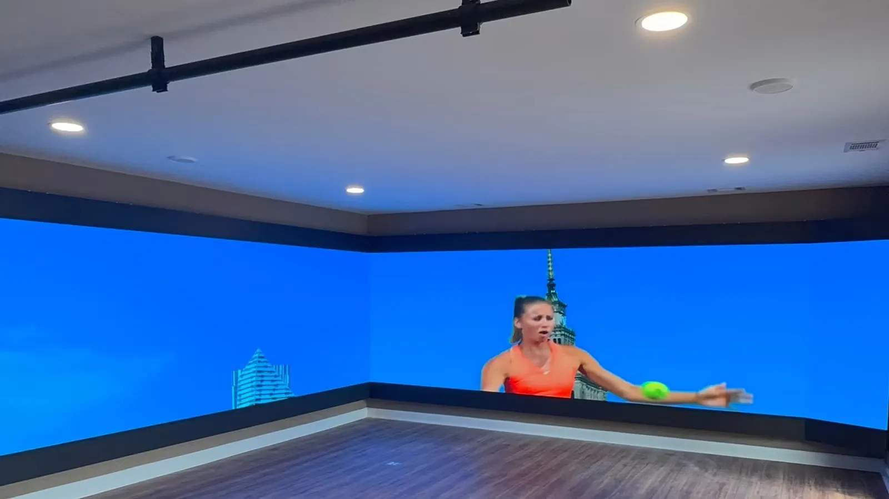
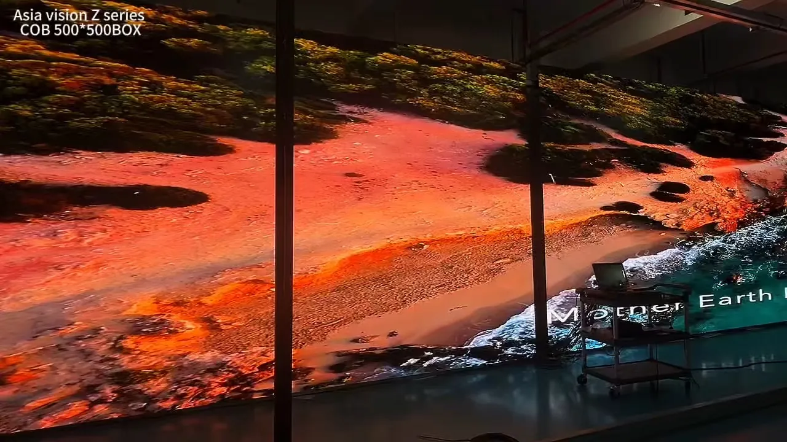
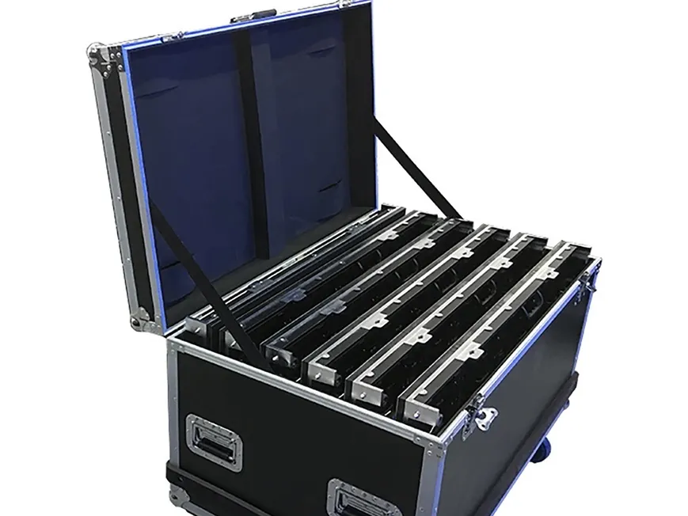

By David
Vetting a China LED display supplier is how you choose a manufacturer you can hold responsible for quality, certification, capacity and after-sales support — not only for the unit price. The process is the same whether you call it supplier vetting, manufacturer selection, or a factory audit: define the product, confirm who actually builds it, check certifications for the destination market, inspect quality systems and capacity, test samples, and lock warranty and spare-parts terms in writing before the first production order.
Most expensive mistakes happen before the purchase order, when buyers compare quotes and skip the factory. This guide is a repeatable vetting checklist for importers and integrators. For a side-by-side method of scoring factories, use the companion manufacturer comparison guide. For a wider landscape of Chinese makers, see the 2026 overview of leading manufacturers. Asia Vision’s own plant, processes and published certifications are on the factory page.
The manufacturer decides more than the cabinet price. It controls brightness binning, certification coverage for the shipped model, spare-part continuity, and whether the lead time you were quoted is actually available on the line. A cheap quote from a factory that cannot support the model, or from a trader who will not name the plant, can cost more later in rework, failed inspections, or a dark wall waiting for parts.
Vetting does not mean buying only from the largest name on a list. It means being able to answer, in writing, who makes the product, how it is tested, which certificates apply to the exact model, and who will still answer the phone after installation.
Before you shortlist factories, write down the application: indoor or outdoor, fixed or rental, closest viewing distance, brightness, size, environment, and the destination market for certification. The same wall area can be a fine-pitch lobby screen or a coarse outdoor facade, and those are different manufacturers’ strengths as well as different products.
A written specification is what makes quotes comparable. Factories will otherwise quote different pitches and brightness levels under the same phrase “LED wall.” To see how requirements map to published hardware, use the LED display series overview.
Figure 1 shows a production or factory scene.

Choosing a manufacturer starts with knowing whether you are talking to one. A factory owns the production line and can show it. A trading company resells from one or more plants and may still be a useful single contact for a small buyer, but it should name the factory, allow an audit, and explain who holds the certification files and the spare-parts stock.
| Factor | Factory | Trading company |
|---|---|---|
| Owns the production line | Yes | No |
| Controls quality and testing | Direct | Indirect, unless it can demonstrate factory control |
| Certification files | Own file numbers for the models it builds | Often uses a factory’s files; confirm coverage |
| Design or process changes | Possible on the line | Usually limited |
| After-sales parts | Direct from the maker | Through the factory, with an extra step |
Ask directly: which factory produces this model, and can you share its name and address for the compliance file? A refusal is a reason to stop, not a negotiation point. The same question belongs in any manufacturer comparison.
Certification is a market-entry requirement, not a marketing badge. Ask for documents that name the exact model you will receive, then check them in the public directory rather than trusting a certificate image.
For US commercial installations, buyers typically need a UL or ETL NRTL listing for the assembled product plus FCC Part 15 compliance. Check the live record in UL Product iQ or OSHA’s NRTL program. The certificate verification guide and the UL vs ETL comparison walk through those checks. For European projects, CE and RoHS documentation should cover the same model numbers.
Asia Vision publishes ISO 9001:2015, CE, FCC and RoHS on the factory page. Treat those as the plant’s stated quality and product marks, and still verify any NRTL listing against the specific model and destination. Do not accept a factory-level badge as proof that a particular cabinet is listed for your market.
Figure 2 shows an indoor LED installation.

A factory audit, on site or by a structured video tour, is the core of supplier vetting. The point is not a clean showroom. It is to see how the plant handles incoming materials, in-process checks, aging, calibration, and complaints. Asia Vision publishes a process that includes incoming, in-process and final inspection, a 72-hour burn-in, and ISO 9001:2015; buyers should ask every shortlisted manufacturer to show the equivalent steps on the actual line that will build their order, and should walk the factory page or a comparable visitor tour when they evaluate us.
Ask who signs off a failed burn-in batch, and what happens when a customer reports a module fault. The answers tell you more about the quality system than a framed certificate on the wall.
Capacity is part of manufacturer selection. A factory can have excellent samples and still miss a programme if the line is full, or if the quoted lead time assumes a capacity it does not have. Ask for a production schedule with clear checkpoints — module aging start, cabinet assembly, and final calibration — and ask how many similar cabinets the plant can reasonably run in the same window as your order.
When you evaluate Asia Vision, the factory page states 8 IC production lines, 7 SMT lines, and a published standard delivery of 18 days. Treat those as the plant’s published figures, then still confirm the slot for your configuration in writing. A manufacturer that will not give a schedule, or that quotes a much longer time for a standard cabinet without explanation, may not have the capacity it claims. Project time on the buyer’s side is still driven by structure, approvals and installation access, not only by manufacturing.
For rental work, verify packaging that survives repeated transport. For fixed work, confirm structural drawings and installation documentation.
Order one or two cabinets as samples before committing to the full quantity. Test brightness uniformity, colour temperature, viewing angle, refresh rate, and build quality with your own content. A manufacturer that is ready to be vetted will support sample testing and should say, in writing, whether the sample value is credited against the first order. If a supplier refuses samples, the project risk is already too high. A longer method is in the sample evaluation guide.
After-sales terms are part of choosing a manufacturer, not an appendix. Confirm the warranty length, what it covers (modules, power supplies, receiving cards, on-site labour or return-to-factory), and how long spare modules, power supplies and cards will remain available after shipment. Asia Vision’s standard warranty is 3 years. Do not assume that figure applies to every Chinese supplier; ask each one to state it in the quotation.
Agree a spare-module quantity in writing, plus spare power supplies and receiving cards. Replacement freight often costs more than the part, and a supplier that cannot commit to spares turns the first field failure into a crisis. Ask for a price list and a lead time for each spare item.
Payment terms should protect both sides. A common structure is a deposit to confirm the order and the balance after a pre-shipment inspection, production photos, and a packing list. Letter of credit is used by some established importers. Avoid paying a large balance before those inspection documents exist.
| Quote item | What to verify | Why it matters |
|---|---|---|
| Price unit | Per m² vs per cabinet vs per set | Units can hide different pitches and densities |
| Included hardware | Power supplies, receiving cards, cabling, processor | Missing parts appear later as extra cost |
| Certification | Files that name the shipped model and market | Determines whether the project can pass inspection |
| Warranty and spares | Years, coverage, part availability | Shows how the manufacturer stands behind the product |
| Delivery terms | EXW, FOB, CIF or DDP | Changes the landed cost |
| Lead time | A dated production schedule, not only a number of days | Tests claimed capacity |
The quote comparison checklist explains each line, including freight. The manufacturer comparison guide is the place to score factories once the quotes are normalised.
If you want to include Asia Vision in that shortlist, start with the factory page and contact us with the specification, destination market and programme. We can arrange a video tour or an on-site visit and provide the model documentation your compliance file will need.
Share your specification, destination market and programme. We can provide model documentation and arrange a video tour or a factory visit.
Request a Manufacturer QuoteChat on WhatsApp